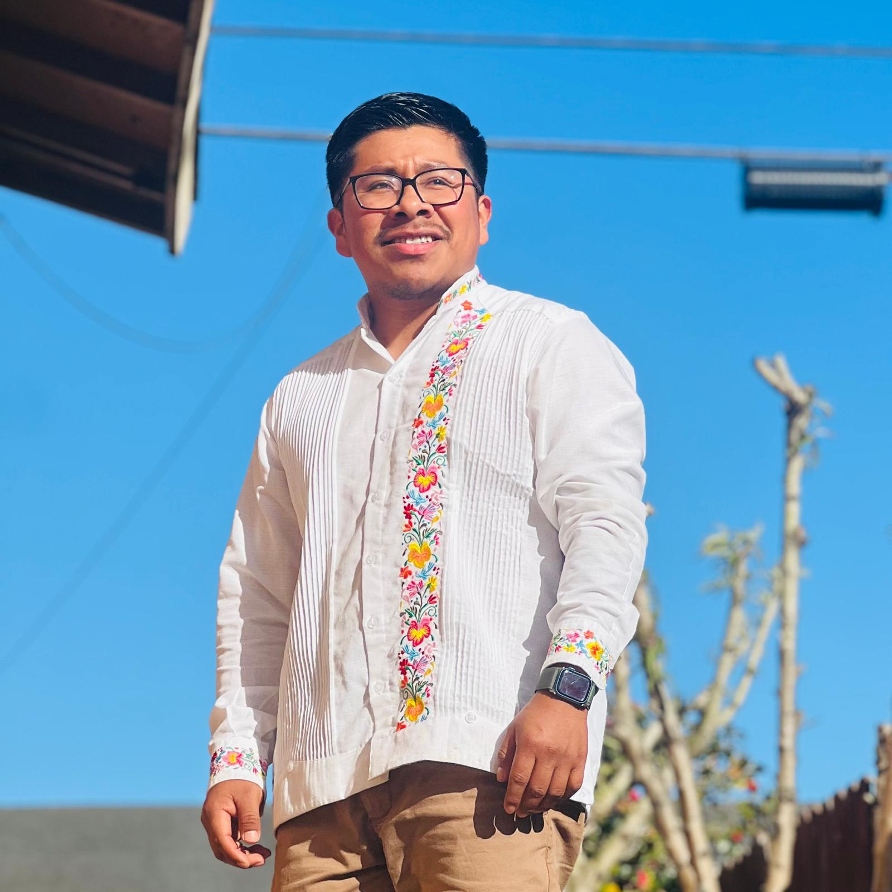

Inî G Mendoza
Researcher, Linguist & Mixtec Educator
Dedicated to the preservation, documentation, and revitalization of Mixtec languages and Indigenous knowledge systems.

About Me
I am a researcher and linguist specializing in Mixtec languages, working at the intersection of language documentation, Indigenous education, and community-based research methodologies.
My work focuses on collaborative approaches to language revitalization, developing educational resources for Mixtec-speaking communities, and advocating for linguistic diversity and Indigenous rights.
As a Mixtec educator, I am committed to creating accessible resources that serve both academic communities and Indigenous language speakers, ensuring that research benefits the communities it represents.
Research Interests
- Mixtec Language Documentation & Revitalization
- Indigenous Language Education
- Community-Based Participatory Research
- Linguistic Anthropology
- Language Policy & Planning
Publications
Explore my research publications, articles, and educational materials on Mixtec linguistics and Indigenous education.
View PublicationsResources
Access learning materials, language resources, and tools for Mixtec language study and teaching.
Browse ResourcesCollaborate
Interested in collaboration? Reach out for research partnerships, speaking engagements, or community projects.
Get in Touch